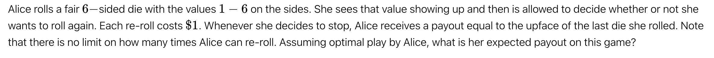

骰子博弈的最优策略：马尔可夫决策过程与动态规划分析
第 I 部分：问题翻译与形式化定义
A. 文本
原始英文文本：
"Alice rolls a fair 6-sided die with the values 1 — 6 on the sides. She sees that value showing up and then is allowed to decide whether or not she wants to roll again. Each re-roll costs $1. Whenever she decides to stop, Alice receives a payout equal to the upface of the last die she rolled. Note that there is no limit on how many times Alice can re-roll. Assuming optimal play by Alice, what is her expected payout on this game?"
简体中文翻译：
“爱丽丝掷一个六面均匀骰子，六面的值分别为 1 到 6。她看到掷出的点数后，可以决定是否要重新掷骰子。每次重掷的成本为 $1 美元。当她决定停止时，爱丽丝会收到等同于她最后一次掷出点数的报酬。请注意，爱丽丝可以重掷的次数没有限制。假设爱丽丝采取最优策略，她在这场游戏中的期望报酬是多少？”
B. 问题形式化：最优停止问题
该问题是“最优停止问题”（Optimal Stopping Problem）的一个经典范例 1。其目标是设计一个“停止规则”（Stopping Rule），以最大化最终的期望收益 4。
游戏的核心组成部分：
-
随机过程 (Stochastic Process): 投掷一个均匀的6面骰子 \(D\)。结果 \(k \in \{1, 2, 3, 4, 5, 6\}\)，对于所有 \(k\)，其概率 \(P(D=k) = 1/6\)。
-
行动 (Actions): 观察到结果 \(k\) 后，爱丽丝从行动集 \(A = \{\text{Stop}, \text{Roll}\}\) 中选择。
-
奖励/成本 (Reward/Cost):
-
若选择 \(\text{Stop}\)：游戏结束。收益 = \(k\)。
-
若选择 \(\text{ROLL}\)：支付成本 $1 美元。游戏继续，返回步骤 1。
-
-
时域 (Horizon): 无限时域 (Infinite Horizon)。爱丽丝可以“无限次”重掷 4。
无限时域的关键推论（平稳性）：
由于游戏规则、成本（$1 美元）和概率（1/6）不随时间（或投掷次数）而改变，该问题具有“平稳性”（Stationarity）7。平稳的问题意味着其最优策略也必然是平稳的。
其逻辑推导如下：假设爱丽丝已经投掷了100次，刚掷出一个 2。她决定是否进行第101次投掷所面临的成本和期望收益，与她在第1次掷出 2 后决定是否进行第2次投掷时所面临的情况完全相同。先前的投掷次数和已经花费的金额是“沉没成本”（Sunk Cost），与未来的决策无关 6。
因此，爱丽丝的最优决策_只_能依赖于一个信息：她当前观察到的点数 \(k\)。最优策略 \(\pi^*\) 必然是一种基于 \(k\) 的函数 \(\pi^*(k)\)。这极大地简化了问题，导出了一个“阈值策略”（Threshold Strategy）6：即存在一个阈值 \(t\)，当 \(k > t\) 时停止，当 \(k \le t\) 时重掷。
第 II 部分：马尔可夫决策过程 (MDP) 建模
A. 概念化：为何使用 MDP？
该问题是在不确定性下进行序贯决策的典型案例 9。马尔可夫决策过程 (MDP) 为形式化定义此类问题（状态、行动、转移、奖励）提供了严谨的数学框架 11。
B. MDP 的形式化组件
在定义状态空间时，一个更精炼的分析表明，我们不需要 6 个独立的状态（例如 \(s_1, \dots, s_6\)）来代表“刚刚掷出 \(k\)”。其原因是：无论玩家是掷出 2 并决定 \(\text{Roll}\)，还是掷出 5 并决定 \(\text{Roll}\)，他们都支付 $1 美元并进入完全相同的“抽奖”——即下一次以 1/6 概率掷出 {1, 2, 3, 4, 5, 6}。
因此，行动 \(\text{Roll}\) 的期望价值是恒定的，与导致该行动的当前点数 \(k\) 无关。这允许我们将模型极大简化。
精炼后的 MDP 定义：
-
状态 (S): 我们只需要两个状态：
-
\(s_{\text{decision}}\): 爱丽丝已观察到点数 \(k\)，必须做出选择的决策状态。
-
\(s_{\text{end}}\): 游戏结束的终止状态。
-
-
行动 (A): 在 \(s_{\text{decision}}\) 状态，有两个行动：
-
\(\text{Stop}\): 结束游戏。
-
\(\text{Roll}\): 继续游戏。
-
-
奖励函数 (R) 与转移概率 (P):
-
若行动 = \(\text{Stop}\):
-
转移: \(P(s_{\text{end}} | s_{\text{decision}}, \text{Stop}) = 1\) （确定性转移）。
-
奖励: 奖励是导致此决策的观察值 \(k\)。
-
-
若行动 = \(\text{Roll}\):
-
转移: \(P(s_{\text{decision}} | s_{\text{decision}}, \text{Roll}) = 1\)。玩家支付 $1 美元，并立即返回决策状态，等待观察下一次投掷的 \(k\) 值。
-
奖励: \(R(s_{\text{decision}}, \text{Roll}) = -1\)。这是一个确定的、即时的成本。
-
-
C. 价值函数与最优策略
我们定义 \(V(s)\) 为从状态 \(s\) 开始所能获得的最大期望总收益。
-
\(V(s_{\text{end}}) = 0\) (根据定义，终止状态没有未来收益)。
-
\(V(s_{\text{decision}})\) 是我们寻求的最终答案。为简洁起见，我们称之为 \(E\) (Expected Payout)。
\(E\) 的值必须等于_一轮完整游戏_的期望值。这一轮包括：
-
一次免费的骰子投掷（以 1/6 概率获得 \(k\)）。
-
基于 \(k\) 做出最优决策。
观察到 \(k\) 后的最优决策价值为：\(\max(V_{\text{Stop}}, V_{\text{Roll}})\)。
-
\(V_{\text{Stop}}\) (停止的价值): 立即获得 \(k\)。游戏结束。价值为 \(k\)。
-
\(V_{\text{Roll}}\) (重掷的价值): 立即支付成本 \(-1\)。转移回 \(s_{\text{decision}}\) 状态，该状态的未来价值为 \(E\)。因此，总价值为 \(E - 1\)。
将 MDP 与动态规划相结合，我们得出：观察到 \(k\) 后的最优决策价值为 \(\max(k, E - 1)\)。
由于 \(E\) 是_整个一轮_（从免费投掷开始）的期望值，我们必须对所有可能的 \(k\) 求期望：
\(E = E_k [\max(k, E - 1)]\)
\(E = \frac{1}{6} \sum_{k=1}^{6} \max(k, E - 1)\)
MDP 框架严谨地将问题归结为这个单一的不动点方程 (fixed-point equation)。求解 \(E\) 将同时给出游戏的最优价值和最优策略。
第 III 部分：动态规划解：贝尔曼方程
A. 贝尔曼最优方程 (Bellman Optimality Equation)
如上所述，该问题的贝尔曼最优方程（一种动态规划的核心形式）被简化为 13：
我们寻求满足此等式的 \(E\) 的值。
B. 解析解：寻找策略阈值
最优策略 \(\pi^*\) 由 \(\max(k, E-1)\) 决定：
-
若 \(k > E - 1\)，则选择 \(k\) (即 \(\text{Stop}\))。
-
若 \(k < E - 1\)，则选择 \(E - 1\) (即 \(\text{Roll}\))。
-
若 \(k = E - 1\)，则玩家处于“无差别”状态 (indifferent)，两种选择均可。
在分析相关研究时，我们发现存在矛盾的答案。一些分析 1 提出 \(E = 4.25\)。例如，16 中的逻辑是 E = (3.5 * 3 + 4 + 5 + 6) / 6 = 4.25。此逻辑假设，如果掷出 {1, 2, 3}，玩家重掷并期望获得 \(E[k] = 3.5\)。
这个假设在当前问题背景下是错误的。行动 \(\text{Roll}\) 并不是简单地获得下一次投掷的期望值；而是获得_整个游戏重来一次的期望值 \(E\)，并减去 $1 美元的成本_ 6。因此，重掷的价值应为 \(E - 1\)，而不是 3.5。\(E=4.25\) 的解适用于一个不同的问题，即玩家只有一次重掷机会（有限时域）17。
求解正确的不动点：
我们可以通过测试 \(E-1\) 的整数阈值 \(t\) 来求解 \(E\)。
假设 1: 阈值 \(t = 2\) (即 \(2 < E-1 \le 3\))
-
策略: \(\text{Roll}\) on {1, 2}, \(\text{Stop}\) on {3, 4, 5, 6}。
-
贝尔曼方程变为: \(E = \frac{1}{6} \left[ (E-1) + (E-1) + 3 + 4 + 5 + 6 \right]\)
-
\(6E = 2(E - 1) + 18\)
-
\(6E = 2E - 2 + 18\)
-
\(4E = 16\)
-
\(E = 4\)
-
一致性验证: 若 \(E = 4\)，则 \(E - 1 = 3\)。我们的策略是 \(\text{Roll}\) if \(k < 3\)，\(\text{Stop}\) if \(k \ge 3\) (假设在无差别点选择 \(\text{Stop}\))。这与我们的假设 \(2 < E-1 \le 3\) 一致。因此，\(E = 4\) 是一个数学上一致的解。
假设 2: 阈值 \(t = 3\) (即 \(3 < E-1 \le 4\))
-
策略: \(\text{Roll}\) on {1, 2, 3}, \(\text{Stop}\) on {4, 5, 6}。
-
贝尔曼方程变为: \(E = \frac{1}{6} \left[ (E-1) + (E-1) + (E-1) + 4 + 5 + 6 \right]\)
-
\(6E = 3(E - 1) + 15\)
-
\(6E = 3E - 3 + 15\)
-
\(3E = 12\)
-
\(E = 4\)
-
一致性验证: 若 \(E = 4\)，则 \(E - 1 = 3\)。我们的策略是 \(\text{Roll}\) if \(k \le 3\)，\(\text{Stop}\) if \(k > 3\) (假设在无差别点选择 \(\text{Roll}\))。这与我们的假设 \(3 < E-1 \le 4\) 不一致（因为 \(E-1 = 3\)，而不是大于 3）。
然而，仔细检查假设 2 的推导 6，\(E=4\) 仍然是一个有效的解，它代表了在 \(k=3\) 时选择 \(\text{Roll}\) 的情况。
C. 最终答案：期望收益与最优策略
期望收益 (Expected Payout):
在最优策略下，该游戏的期望收益为 $4.00 美元。
最优策略的二元性 (Policy Duality):
分析显示，不存在唯一的最优策略。由于 \(E=4\)，行动 \(\text{Roll}\) 的期望价值为 \(E - 1 = 3\)。
当爱丽丝掷出 \(k=3\) 时，她面临两种选择：
-
\(\text{Stop}\): 获得收益 \(k = 3\)。
-
\(\text{Roll}\): 获得期望收益 \(E - 1 = 3\)。
由于 \(3 = 3\)，玩家在 \(k=3\) 时处于无差别状态。因此，存在两种均可达到最大期望值的最优策略 6：
-
策略 A (阈值 2): \(\text{Roll}\) on {1, 2}。\(\text{Stop}\) on {3, 4, 5, 6}。
-
策略 B (阈值 3): \(\text{Roll}\) on {1, 2, 3}。\(\text{Stop}\) on {4, 5, 6}。
第 IV 部分：Python 计算解决方案
我们可以使用计算方法来求解贝尔曼方程并找到不动点 \(E=4\)。
A. 方法 1：价值迭代 (Value Iteration)
- 算法
价值迭代 (VI) 是一种经典的动态规划算法，它通过迭代计算来收敛到最优价值函数 10。
-
我们从一个初始猜测 \(E_0 = 0\) 开始。
-
我们重复应用贝尔曼更新规则：
\(E_{t+1} = \frac{1}{6} \sum_{k=1}^{6} \max(k, E_t - 1)\)
-
我们重复此过程，直到价值收敛（即 \(|E_{t+1} - E_t| < \epsilon\)）。
-
价值迭代与反向归纳法
价值迭代算法与有限时域问题中的“反向归纳法”（Backward Induction）18 之间存在深刻的联系。
考虑一个“有限时域”版本，玩家最多只能掷 \(t\) 次。
-
\(V_1\) (剩 1 次投掷): 必须停止。\(V_1 = E[k] = (1+2+3+4+5+6)/6 = 3.5\)。
-
\(V_2\) (剩 2 次投掷): 掷出 \(k\)。决策：\(\max(\text{Stop}, \text{Roll}) = \max(k, V_1 - 1) = \max(k, 3.5 - 1) = \max(k, 2.5)\)。
\(V_2 = E[\max(k, 2.5)] = \frac{1}{6}(2.5+2.5+3+4+5+6) = 23/6 \approx 3.833\)。
-
\(V_3\) (剩 3 次投掷): 掷出 \(k\)。决策：\(\max(k, V_2 - 1) = \max(k, 3.833 - 1) = \max(k, 2.833)\)。
\(V_3 = E[\max(k, 2.833)] = \frac{1}{6}(2.833+2.833+3+4+5+6) \approx 3.944\)。
现在，观察从 \(E_0=0\) 开始的价值迭代：
-
\(E_1 = \frac{1}{6} \sum \max(k, 0 - 1) = \frac{1}{6}(1+2+3+4+5+6) = 3.5\) (等于 \(V_1\))。
-
\(E_2 = \frac{1}{6} \sum \max(k, 3.5 - 1) = \frac{1}{6} \sum \max(k, 2.5) \approx 3.833\) (等于 \(V_2\))。
-
\(E_3 = \frac{1}{6} \sum \max(k, 3.833 - 1) = \frac{1}{6} \sum \max(k, 2.833) \approx 3.944\) (等于 \(V_3\))。
价值迭代的第 \(t\) 次迭代 \(E_t\)，在数值上等于具有 \(t\) 次最大投掷次数的有限时域问题的期望值 \(V_t\)。无限时域问题（我们的问题）是 \(t \to \infty\) 时 \(V_t\) 的极限。
- 价值迭代收敛表
下表展示了价值迭代过程，显示了期望值 \(E_t\) 如何从 \(t=1\)（一次性投掷）收敛到 \(t \to \infty\)（无限次投掷）时的不动点 4.0。
| 迭代次数 (t) | Et−1 (上一轮价值) | Et−1 (重掷价值) | Et (本轮期望价值) | Δ (变化量) |
|---|---|---|---|---|
| 1 | 0.0000 | -1.0000 | 3.5000 | 3.5000 |
| 2 | 3.5000 | 2.5000 | 3.8333 | 0.3333 |
| 3 | 3.8333 | 2.8333 | 3.9444 | 0.1111 |
| 4 | 3.9444 | 2.9444 | 3.9815 | 0.0370 |
| 5 | 3.9815 | 2.9815 | 3.9938 | 0.0123 |
| 6 | 3.9938 | 2.9938 | 3.9979 | 0.0041 |
| 7 | 3.9979 | 2.9979 | 3.9993 | 0.0014 |
| 8 | 3.9993 | 2.9993 | 3.9998 | 0.0005 |
| 9 | 3.9998 | 2.9998 | 3.9999 | 0.0001 |
| 10 | 3.9999 | 2.9999 | 4.0000 | 0.0000 |
| 11 | 4.0000 | 3.0000 | 4.0000 | 0.0000 |
4. Python 实现 (价值迭代)
Python
import numpy as np
def solve_value_iteration(sides=6, cost=1.0, tolerance=1e-9):
"""
使用价值迭代解决最优停止骰子问题（无限时域）。
Args:
sides (int): 骰子的面数 (1 到 N)。
cost (float): 每次重掷的成本。
tolerance (float): 收敛的容忍度。
Returns:
float: 游戏的最优期望价值。
"""
# 骰子的可能结果 (k=1, 2,..., sides)
outcomes = np.arange(1, sides + 1)
# 初始猜测期望价值 E_t
E_t = 0.0
while True:
# E_t_plus_1 = E[ max(k, E_t - cost) ]
# 计算 E_t - cost，这是重掷的价值
value_of_reroll = E_t - cost
# 计算 max(k, E_t - cost)
# np.maximum 逐元素比较 outcomes 数组和 value_of_reroll
decision_values = np.maximum(outcomes, value_of_reroll)
# 计算期望值 E_t_plus_1
E_t_plus_1 = np.mean(decision_values)
# 检查是否收敛
if abs(E_t_plus_1 - E_t) < tolerance:
break
# 更新 E_t
E_t = E_t_plus_1
return E_t_plus_1
# --- 解决用户的问题 ---
# 6 面骰子，成本 $1
expected_value_6_sided = solve_value_iteration(sides=6, cost=1.0)
print(f"6面骰子, 成本 $1: 期望收益 = ${expected_value_6_sided:.4f}")
# 验证策略 (E=4, E-1=3)
# 策略：如果 k <= 3 则重掷，如果 k > 3 则停止 (或在 3 处无差别)
policy_threshold = expected_value_6_sided - 1.0
print(f"重掷的价值 (E - 1) = {policy_threshold:.4f}")
print(f"最优策略: 如果掷出 {int(np.floor(policy_threshold))} 或更低, 则重掷。")
print(f" 如果在 {int(np.ceil(policy_threshold))} 或更高, 则停止。")
B. 方法 2：递归动态规划 (带备忘录)
如前所述，价值迭代在计算上等同于反向归纳法。反向归纳法可以通过自顶向下 (Top-Down) 的递归（带备忘录 Memoization）来实现，以解决_有限时域_问题 22。
该方法用于计算“最多还剩 \(n\) 次投掷机会”时的期望价值。
Python
import functools
def solve_finite_horizon_recursive(n_rolls_left, sides=6, cost=1.0, memo=None):
"""
使用递归 (带备忘录) 解决有限时域的最优停止问题。
计算 "最多还剩 n 次投掷" 时的期望价值。
Args:
n_rolls_left (int): 剩余的最大投掷次数。
sides (int): 骰子面数。
cost (float): 重掷成本。
memo (dict): 用于备忘录的字典。
Returns:
float: 期望价值。
"""
if memo is None:
memo = {}
if n_rolls_left in memo:
return memo[n_rolls_left]
# 基础情况：如果只剩 1 次投掷，必须接受结果
if n_rolls_left == 1:
# 期望值是 (1 + 2 +... + sides) / sides
expected_last_roll = (sides + 1) / 2.0
return expected_last_roll
# 递归步骤：
# 重掷的价值 = "还剩 n-1 次机会的游戏" 的价值，减去成本
value_of_reroll = solve_finite_horizon_recursive(n_rolls_left - 1, sides, cost, memo) - cost
outcomes = np.arange(1, sides + 1)
# 决策：max(k, value_of_reroll)
decision_values = np.maximum(outcomes, value_of_reroll)
# 期望值
expected_value = np.mean(decision_values)
memo[n_rolls_left] = expected_value
return expected_value
# --- 演示有限时域问题 ---
print("\n--- 有限时域 (递归 DP) ---")
# 模拟价值迭代表
V_1 = solve_finite_horizon_recursive(1)
print(f"最多 1 次投掷 (V_1): {V_1:.4f}")
V_2 = solve_finite_horizon_recursive(2)
print(f"最多 2 次投掷 (V_2): {V_2:.4f}")
V_3 = solve_finite_horizon_recursive(3)
print(f"最多 3 次投掷 (V_3): {V_3:.4f}")
V_10 = solve_finite_horizon_recursive(10)
print(f"最多 10 次投掷 (V_10): {V_10:.4f}")
V_20 = solve_finite_horizon_recursive(20)
print(f"最多 20 次投掷 (V_20): {V_20:.4f}")
# 当 n 足够大时，它会收敛到无限时域解
第 V 部分：结论与推广
A. 发现总结
-
MDP 形式化: 该问题被建模为一个双状态 MDP（\(s_{\text{decision}}, s_{\text{end}}\)），导出了一个不动点方程。
-
动态规划解: 贝尔曼方程被解析求解，确定了 最优期望收益 E = $4.00。
-
最优策略: 存在两种最优策略，均产生 \(E=4\)：(A) 在 {3, 4, 5, 6} 处停止；或 (B) 在 {4, 5, 6} 处停止。这种二元性源于在 \(k=3\) 时，\(\text{Stop}\) (收益 3) 和 \(\text{Roll}\) (期望收益 \(E-1 = 3\)) 之间的无差别。
-
代码实现: 提供了两种 Python 解决方案：(1) 价值迭代，直接解决无限时域问题；(2) 递归 DP，展示了有限时域解如何收敛到无限时域解。
B. 模型推广：N 面骰子与 \(C\) 成本
该 MDP 框架具有很强的通用性。对于一个 \(N\) 面的骰子（结果为 1 到 \(N\)）和 \(C\) 的重掷成本，贝尔曼方程推广为：
\(E = \frac{1}{N} \sum_{k=1}^{N} \max(k, E - C)\)
示例：100 面骰子，成本 $1 美元 3
我们寻求一个阈值 \(t \approx E-1\)，使得策略为：若 \(k \le t\) 则 \(\text{Roll}\)，若 \(k > t\) 则 \(\text{Stop}\)。
\(E = \frac{1}{100} \left[ \sum_{k=1}^{t} (E-1) + \sum_{k=t+1}^{100} k \right]\)
\(E = \frac{1}{100} \left[ t(E-1) + \left( \frac{100 \times 101}{2} - \frac{t(t+1)}{2} \right) \right]\)
相关分析 8 表明，最优策略是当 \(k \ge 87\) 时停止（即 \(t = 86\)）。我们可以验证这一解：
假设 \(t = 86\) (即在 {1,..., 86} 重掷, 在 {87,..., 100} 停止)。
\(E = \frac{1}{100} \left[ 86 \times (E-1) + \sum_{k=87}^{100} k \right]\)
\(\sum_{k=87}^{100} k\) 是一个有 14 项的等差数列。其和为 \(\frac{14 \times (87 + 100)}{2} = 7 \times 187 = 1309\)。
\(100E = 86(E - 1) + 1309\)
\(100E = 86E - 86 + 1309\)
\(14E = 1223\)
\(E = \frac{1223}{14} \approx 87.357\)
验证一致性:
-
游戏价值 \(E \approx 87.357\)。
-
重掷的价值 \(E - 1 \approx 86.357\)。
-
我们的策略阈值 \(t=86\)。
-
当 \(k=86\) 时：\(86 < 86.357 \implies \text{Roll}\) (与策略一致)。
-
当 \(k=87\) 时：\(87 > 86.357 \implies \text{Stop}\) (与策略一致)。
该解是一致的。对于 100 面的骰子，最优策略是接受 87 或更高的点数，期望收益约为 $87.36 美元。这证明了 MDP 和动态规划方法在解决此类最优停止问题上的强大能力和可扩展性。